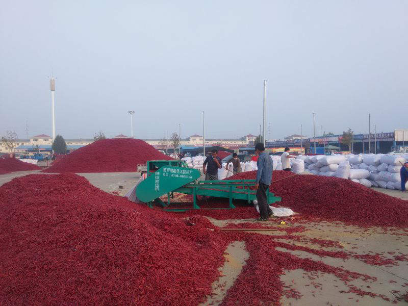
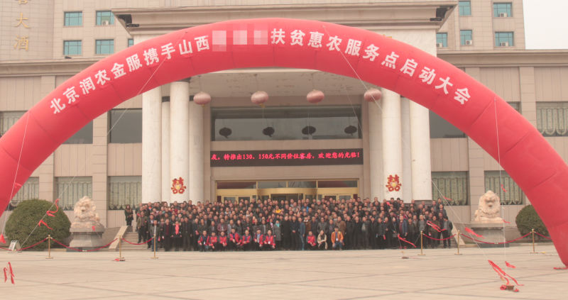
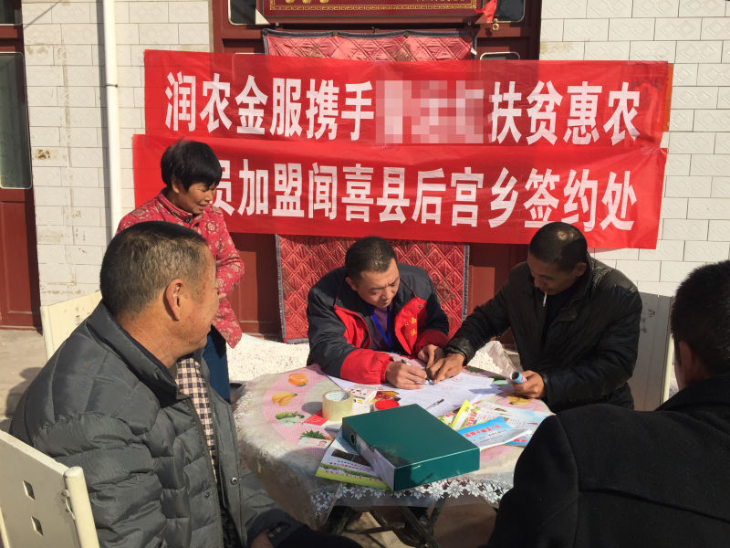

玩转农村金融的正确姿势——产业链利润重新分配+双维度征信系统
资金短缺一直以来是制约农村农业发展的瓶颈，随着政策对农村金融创新的支持力度加大，越来越多的资本力量开始探索这片新大陆。从联想旗下的翼龙贷到苏宁新推出的任性付，都看中了尚待开发的农村市场。
然而，农村领域的资金需求虽然巨大，但因缺少信用评价体系，又面对土地抵押等现实难题，长久以来这一领域外界鲜有涉足，甚至连各地农业银行的资金都很难流入农业生产环节。都说外来的和尚会念经。新兴的一些互联网金融产品是否就能解决这些问题呢？
不谋全局者不足谋一域
一方面，风险的控制离不开信用体系的建立。对此，各家皆有所长，比较典型的是淘宝芝麻信用。其采取了和支付宝钱包合作的方式，采用国际上通用的信用分来直观表现用户信用水平高低，从信用历史、行为偏好等维度来计算信用分。但这里也存在两个问题，一是农民是否有使用支付宝钱包的习惯，二是数据来源主要在消费环节，对于能否全面准确地反映出用户信用程度，一些业界人士尚且存疑。
另一方面，大多数新兴的农村金融产品仅是针对农民生产生活的资金需求发放贷款，与传统的农信社等机构相比，要不就是贷款额度不同，要不就是征信手段略异，要不就是把业务从线下搬到线上。客观上对农民农村资金匮乏的现状做出了一定改善，但并没有真正优化农业生产与农村生态，高风险之类的问题并没有得到实际的解决，治标没有治本。 这些问题的关键就在于无论是征信体系还是金融产品本身，都是集中于农业产业链的单一环节，试图单点击破，却发现处处掣肘。
那么，有没有一种行之有效的解决方案呢？
羊毛出在猪身上
当年，360公司用“免费”这张王牌“血洗”了杀毒软件行业，证明了“羊毛可以出在猪身上”。有时候，整合产业链，创新玩法，可能才是破局的关键。同样，在农业领域，就贷款谈贷款，就金融谈金融，结果很可能是在死局里转圈。要想跳出去，就要站在更高的视角，对产业链进行全面的梳理，将利润在整个产业链上重新分配。这个设想貌似很宏大，大到很多人认为无从下手，但有人还真把这事儿玩成了。
成立于2015年的润农金服，虽然也是针对农民的生产与生活消费提供贷款，且时间不长，但已经在山西、河南、山东等省份成立惠农网点数百家，签约农户近万户，签约种植面积近10万亩，签约贷款金额8000万，发展呈现燎原之势。那么，这其中有何奥秘？
首先，这个项目的创始团队就不容小觑，团队成员来自消费金融公司、恒生等知名企业。其创始人王歌从事互联网16年，2008年进入互联金融领域，其创建的项目已被某互联网金融公司全资收购。整个团队对互联网金融行业有高度的敏感性和前瞻性，在金融、农业、互联网、营销等领域集结了一批优秀干将。而这个华丽丽的团队是如何玩转农村金融的呢？
窍门之一：产业链利润重新分配，一条龙服务绝无死角
作为一家金融企业，润农金服首先做的事情竟然是组织了专门的行业研究团队，从育种基地到种植专家，再到销路打通，全面梳理了某一品种农作物的各地区近10年的数据的市场与种植信息，再由此确定合作对象与种植品种。
山东金乡辣椒交易市场
以2016年在山西试点的辣椒产业为例。在合作中，先由润农金服为合作农户垫付种子、化肥、地膜等农资费用，期间还帮助协调专业的种植技术指导，保证高产高质。收获后以合理的保护价回收，并直接对接给老干妈等食品加工企业或采购方，让农户没有后顾之忧。
这看起来有些像“公司+农户”的老套路，而这个套路不知玩死了多少农业企业，难道金融企业就能玩赢吗？
需要强调的是，润农金服采用的是产业链金融的创新模式,使产业链上的各方形成了利益共同体。借助在上下游拥有的强大的资源运作能力，通过金融手段链接各方、监督各方、约束各方，整合产业链，让利润分配向农户倾斜。具体来说，润农金服先是在前端通过批量采购与公司贴牌等方式，降低了农资成本，并以免息的方式赊销给农户，直接为农户降低种植成本；在后端以合理的保护价托底收购，将产品直接对接给食品加工企业、贸易商、渠道商，因为减少了流通环节，由此把挤出的利润分配给了农户。前端的成本降低，后端的利润提高，农户收益增加，其消费能力与偿还能力均有所上升，而作为金融机构的润农金服也将从中收益，由此实现了多方合作共赢。
但是，如果农户毁约怎么办？
窍门之二：生产+消费，双维度建立征信体系
以往被玩死的农业企业大多是死在了农民毁约的“魔咒”之下，因为农民毁约的成本太低，即使毁约，企业也无法一一追责。所以，没有健全的诚信体系，大企业最终斗不过小散户。但是润农金服却很好地解决了这个问题。
润农金服基于对农户农业生产消费信息以及生活消费信息的数据综合分析，建立了一套科学合理的农民信用评级体系。与传统征信手段明显不同的是，润农金服采集农户信用数据是从两方面下手：一是在生产合作中，通过在种植过程的服务，准确预估其产量，并推算出其年收入，以此作为授信额度的重要依据。二是在消费金融方面，除了自身采集的数据之外，还与农村电商等渠道合作，抓取消费数据。生产与消费两方面的数据相互支撑，形成两个交错的信息闭环，再综合家庭状况、行为偏好等信息，打造出全面准确的信用评价体系。这种模式相对于传统的仅从消费端采集信用数据的做法，更全面准确，由于加入了生产端的信息，能更好地反映农户的盈利能力与偿还能力。不仅对农户的信用状况做到了如指掌，而且对农户的信用行为产生了多角度的约束。
由于润农金服与育种单位及其他农资企业建立了紧密合作，而经济作物种子的供应渠道非常有限，肥料又大多为自有贴牌产品，这使得润农金服在农资供应渠道上有较大的掌控力。农户如果毁约将意味着失去获得这些优质农资的渠道和农资的赊销服务，进而只能全款采购价格昂贵的农资来替代。同时，凭借对下游的掌控力，也不会有合作方来收购违约农户的农产品。因此，毁约行为对农户来说后患无穷，农户也就彻底断绝了毁约的念头。
正是这种完善的信用体系的支撑，才构成了润农金服与农户长期合作共赢的基础。
2016年11月25日山西闻喜负责人大会
2016年底，在国家压缩玉米种植面积的导向之下，润农金服经过在种植领域的深入调研与前期试点后，确定在河北、山西两地与农户合作种植辣椒。以往每亩地种玉米的纯收入只有500元左右，而种辣椒却能达到3000元以上。之前农户对种辣椒并不熟悉，也不敢尝试，但有了润农金服一条龙的种植服务与引导，已经有几百个村的上万户农民签订了合作协议。
2016年12月2日山西闻喜县后宫乡农户签约现场
此外，润农金服已经在畜牧养殖领域陆续开始了尝试，延用了在种植领域的经验模式，并与金锣等大型企业建立了合作。
农业圈里从来不缺有情怀的人，但真正解决问题还需要思路的创新。正所谓“授之于鱼不如授之于渔”，给农民借钱，不如帮农民赚钱，也许这才是玩转农村金融的正确姿势。